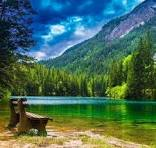

Natural views

Welcome to my blog
This a a natura view in which we can see mountains lake and the greenry
inhane the beauti of the whole view.people like this view alot The absence
of a deep emotional connection between humans and the natural world is at the root of
the environmental crisis. Can you think of a place in nature that you know really well?
Close your eyes for a moment and see what comes up. Can you visualise the place in exquisite
detail? The sounds,